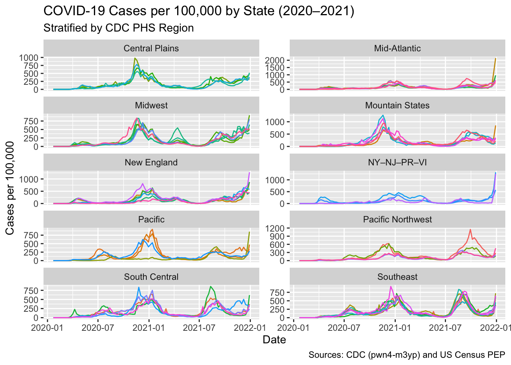

In the next problem set, we plan to explore the relationship between COVID-19 death rates and vaccination rates across US states by visually examining their correlation. This analysis will involve gathering COVID-19 related data from the CDC’s API and then extensively processing it to merge the various datasets. Since the population sizes of states vary significantly, we will focus on comparing rates rather than absolute numbers. To facilitate this, we will also source population data from the US Census to accurately calculate these rates.
In this problem set we will learn how to extract and wrangle data from the data US Census and CDC APIs.
pkgs <-c("httr2", # HTTP requests and API interactions"tidyverse", # Data manipulation, visualization, and analysis"janitor", # Data cleaning and formatting"jsonlite", # JSON data parsing"lubridate"# Date and time manipulation)to_install <-setdiff(pkgs, rownames(installed.packages()))if (length(to_install)) {install.packages(to_install, dependencies =TRUE)}invisible(lapply(pkgs, require, character.only =TRUE))
Loading required package: httr2
Loading required package: tidyverse
── Attaching core tidyverse packages ──────────────────────── tidyverse 2.0.0 ──
✔ dplyr 1.1.4 ✔ readr 2.1.5
✔ forcats 1.0.1 ✔ stringr 1.5.2
✔ ggplot2 4.0.0 ✔ tibble 3.3.0
✔ lubridate 1.9.4 ✔ tidyr 1.3.1
✔ purrr 1.1.0
── Conflicts ────────────────────────────────────────── tidyverse_conflicts() ──
✖ dplyr::filter() masks stats::filter()
✖ dplyr::lag() masks stats::lag()
ℹ Use the conflicted package (<http://conflicted.r-lib.org/>) to force all conflicts to become errors
Loading required package: janitor
Attaching package: 'janitor'
The following objects are masked from 'package:stats':
chisq.test, fisher.test
Loading required package: jsonlite
Attaching package: 'jsonlite'
The following object is masked from 'package:purrr':
flatten
Get an API key from the US Census at https://api.census.gov/data/key_signup.html. You can’t share this public key. But your code has to run on a TFs computer. Assume the TF will have a file in their working directory named census-key.R with the following one line of code:
census_key <- "A_CENSUS_KEY_THAT_WORKS"
Write a first line of code for your problem set that defines census_key by running the code in the file census-key.R.
source("census_key.R")
The US Census API User Guide provides details on how to leverage this valuable resource. We are interested in vintage population estimates for years 2021 and 2022. From the documentation we find that the endpoint is:
Create an object called request of class httr2_request with this URL as an endpoint. Hint: Print out request to check that the URL matches what we want.
<httr2_request>
GET https://api.census.gov/data/2021/pep/population?get=POP_2020%2CPOP_2021%2CNAME&for=state%3A%2A&key=09e560e2345990d79e92cf06a9a99288a8f910af
Body: empty
Make a request to the US Census API using the request object. Save the response to and object named response. Check the response status of your request and make sure it was successful. You can learn about status codeshere.
?req_perform# Make the request and store the responseresponse <-req_perform(request)# Check status code (200 = OK)status <-resp_status(response)if (status !=200) {stop(paste("Request failed with status", status))} else {message("Success: status ", status)}
Success: status 200
Use a function from the httr2 package to determine the content type of your response.
resp_content_type(response)
[1] "application/json"
Use just one line of code and one function to extract the data into a matrix. Hints: 1) Use the resp_body_json function. 2) The first row of the matrix will be the variable names and this OK as we will fix in the next exercise.
Examine the population matrix you just created. Notice that 1) it is not tidy, 2) the column types are not what we want, and 3) the first row is a header. Convert population to a tidy dataset. Remove the state ID column and change the name of the column with state names to state_name. Add a column with state abbreviations called state. Make sure you assign the abbreviations for DC and PR correctly. Hint: Use the janitor package to make the first row the header.
?janitorpopulation <- population |>as.data.frame(stringsAsFactors =FALSE) |> janitor::row_to_names(1) |># first row -> header janitor::clean_names() |>as_tibble() |>select(-state) |># drop state FIPS IDrename(state_name = name) |>mutate(pop_2020 =as.numeric(pop_2020),pop_2021 =as.numeric(pop_2021),state =case_when( state_name =="District of Columbia"~"DC", state_name =="Puerto Rico"~"PR",TRUE~ state.abb[match(state_name, state.name)] ) ) |>relocate(state, state_name, pop_2020, pop_2021)head(population)
# A tibble: 6 × 4
state state_name pop_2020 pop_2021
<chr> <chr> <dbl> <dbl>
1 OK Oklahoma 3962031 3986639
2 NE Nebraska 1961455 1963692
3 HI Hawaii 1451911 1441553
4 SD South Dakota 887099 895376
5 TN Tennessee 6920119 6975218
6 NV Nevada 3114071 3143991
As a check, make a barplot of states’ 2021 and 2022 populations. Show the state names in the y-axis ordered by population size. Hint: You will need to use reorder and use facet_wrap.
points to a JSON file that lists the states in the 10 Public Health Service (PHS) defined by CDC. We want to add these regions to the population dataset. To facilitate this create a data frame called regions that has two columns state_name, region, region_name. One of the regions has a long name. Change it to something shorter.
library(jsonlite)library(purrr)url <-"https://github.com/datasciencelabs/2025/raw/refs/heads/main/data/regions.json"# regions <- use jsonlit JSON parser # regions <- convert list to data frame. You can use map_df in purrr package regions <- jsonlite::fromJSON(url, simplifyVector =FALSE) |> purrr::map_dfr(~tibble(region =as.integer(.x$region[[1]]),region_name =as.character(.x$region_name),state_name =unlist(.x$states, use.names =FALSE) )) |> dplyr::mutate(region_name = dplyr::if_else(region ==2, "NY–NJ–PR–VI", region_name)) |> dplyr::filter(state_name %in%c(state.name, "District of Columbia", "Puerto Rico")) |> dplyr::arrange(region, state_name)table(regions$region_name)
Central Plains Mid-Atlantic Midwest Mountain States
4 6 6 6
New England NY–NJ–PR–VI Pacific Pacific Northwest
6 3 4 4
South Central Southeast
5 8
Add a region and region name columns to the population data frame.
population <- population |> dplyr::left_join(regions, by ="state_name")head(population)
# A tibble: 6 × 6
state state_name pop_2020 pop_2021 region region_name
<chr> <chr> <dbl> <dbl> <int> <chr>
1 OK Oklahoma 3962031 3986639 6 South Central
2 NE Nebraska 1961455 1963692 7 Central Plains
3 HI Hawaii 1451911 1441553 9 Pacific
4 SD South Dakota 887099 895376 8 Mountain States
5 TN Tennessee 6920119 6975218 4 Southeast
6 NV Nevada 3114071 3143991 9 Pacific
From reading https://data.cdc.gov/ we learn the endpoint https://data.cdc.gov/resource/pwn4-m3yp.json provides state level data from SARS-COV2 cases. Use the httr2 tools you have learned to download this into a data frame. Is all the data there? If not, comment on why.
api <-"https://data.cdc.gov/resource/pwn4-m3yp.json"# Make the requestresp <-request(api) |>req_user_agent("bst260-pset04/1.0") |>req_perform()# Check status/contentstopifnot(resp_status(resp) ==200,grepl("json", resp_content_type(resp), ignore.case =TRUE))# Parse to a data framecases_raw <-resp_body_json(resp, simplifyVector =TRUE) |>as_tibble()dim(cases_raw)
# A tibble: 3 × 10
date_updated state start_date end_date tot_cases new_cases tot_deaths
<chr> <chr> <chr> <chr> <chr> <chr> <chr>
1 2023-02-23T00:00:00.… AZ 2023-02-1… 2023-02… 2434631.0 3716.0 33042.0
2 2022-12-22T00:00:00.… LA 2022-12-1… 2022-12… 1507707.0 4041.0 18345.0
3 2023-02-23T00:00:00.… GA 2023-02-1… 2023-02… 3061141.0 5298.0 42324.0
# ℹ 3 more variables: new_deaths <chr>, new_historic_cases <chr>,
# new_historic_deaths <chr>
head(cases_raw)
# A tibble: 6 × 10
date_updated state start_date end_date tot_cases new_cases tot_deaths
<chr> <chr> <chr> <chr> <chr> <chr> <chr>
1 2023-02-23T00:00:00.… AZ 2023-02-1… 2023-02… 2434631.0 3716.0 33042.0
2 2022-12-22T00:00:00.… LA 2022-12-1… 2022-12… 1507707.0 4041.0 18345.0
3 2023-02-23T00:00:00.… GA 2023-02-1… 2023-02… 3061141.0 5298.0 42324.0
4 2023-03-30T00:00:00.… LA 2023-03-2… 2023-03… 1588259.0 2203.0 18858.0
5 2023-02-02T00:00:00.… LA 2023-01-2… 2023-02… 1548508.0 5725.0 18572.0
6 2023-03-23T00:00:00.… LA 2023-03-1… 2023-03… 1580709.0 1961.0 18835.0
# ℹ 3 more variables: new_deaths <chr>, new_historic_cases <chr>,
# new_historic_deaths <chr>
We see exactly 1,000 rows. We should be seeing over \(52 \times 3\) rows per state.
The reason you see exactly 1,000 rows is because CDC has a default limit. You can change this limit by adding $limit=10000000000 to the request. Rewrite the previous request to ensure that you receive all the data. Then wrangle the resulting data frame to produce a data frame with columns state, date (should be the end date) and cases. Make sure the cases are numeric and the dates are in Date ISO-8601 format.
# A tibble: 6 × 3
state date cases
<chr> <date> <dbl>
1 AZ 2023-02-22 3716
2 LA 2022-12-21 4041
3 GA 2023-02-22 5298
4 LA 2023-03-29 2203
5 LA 2023-02-01 5725
6 LA 2023-03-22 1961
For 2020 and 2021, make a time series plot of cases per 100,000 versus time for each state. Stratify the plot by region name. Make sure to label you graph appropriately.
library(lubridate)cases |>filter(date >=as.Date("2020-01-01"), date <=as.Date("2021-12-31")) %>%left_join( population |>select(state, state_name, pop_2020, pop_2021, region_name),by ="state" ) |>mutate(pop =if_else(year(date) ==2020, pop_2020, pop_2021),cases_per_100k =1e5*as.numeric(cases) / pop ) |>ggplot(aes(x = date, y = cases_per_100k, group = state, color = state)) +geom_line() +facet_wrap(~ region_name, ncol =2, scales ="free_y") +guides(color ="none") +labs(title ="COVID-19 Cases per 100,000 by State (2020–2021)",subtitle ="Stratified by CDC PHS Region",x ="Date",y ="Cases per 100,000",caption ="Sources: CDC (pwn4-m3yp) and US Census PEP" )

The dates in the cases dataset are stored as character strings. Use the lubridate package to properly parse the date column, then create a summary table showing the total COVID-19 cases by month and year for 2020 and 2021. The table should have columns for year, month (as month name), and total cases across all states. Order by year and month. Use the knitr package and kable() function to display the results as a formatted table.
Use httr2 to download COVID-19 death data from this endpoint. Make sure to remove the default limit to get all available data. Create a clean dataset called deaths with columns state, date, and deaths (renamed from the original column name). Ensure dates are in proper Date format and deaths are numeric.
resp <-request(deaths_url) |>req_url_query(`$limit`=10000000000) |>req_perform()stopifnot(resp_status(resp) ==200,grepl("json", resp_content_type(resp), ignore.case =TRUE))raw_deaths <-resp_body_json(resp, simplifyVector =TRUE) |>as_tibble()# Identify relevant columns robustlystate_col <-intersect(names(raw_deaths), c("state", "jurisdiction", "state_name"))[1]date_col <-intersect(names(raw_deaths), c("end_date", "submission_date", "date", "as_of"))[1]# Prefer cumulative deaths if present; otherwise fall back to daily/newdeaths_col <-intersect(names(raw_deaths), c("tot_death", "total_deaths", "deaths", "new_death", "new_deaths", "death"))[1]if (any(is.na(c(state_col, date_col, deaths_col)))) {stop("Required columns not found in deaths dataset. Columns present: ",paste(names(raw_deaths), collapse =", "))}# Clean dataset: state, date (Date), deaths (numeric), get rid of the non-statesdeaths <- raw_deaths |>mutate(state = state, date =as.Date(end_date), deaths =as.numeric(covid_19_deaths)) |>select(state, date, deaths) |>filter(state %in% population$state_name,!is.na(deaths),!is.na(date))# "United States" %in% deaths$statehead(deaths)
Using the deaths dataset you created, make a bar plot showing the total COVID-19 deaths by state. Show only the top 10 states with the highest death counts. Order the bars from highest to lowest and use appropriate labels and title.
# Sum deaths by state, keep top 10top10_deaths <- deaths |>group_by(state) |>summarise(total_deaths =sum(deaths, na.rm =TRUE), .groups ="drop")|>arrange(desc(total_deaths)) |>slice_head(n =10)# Bar plot (highest to lowest)ggplot(top10_deaths, aes(x =reorder(state, total_deaths), y = total_deaths)) +geom_col() +coord_flip() +geom_text(aes(label = scales::comma(total_deaths)),hjust =1.1) +scale_y_continuous(labels = scales::label_comma()) +labs(title ="Top 10 States by Total COVID-19 Deaths",x ="State",y ="Total deaths",caption ="Source: CDC (9bhg-hcku)" )